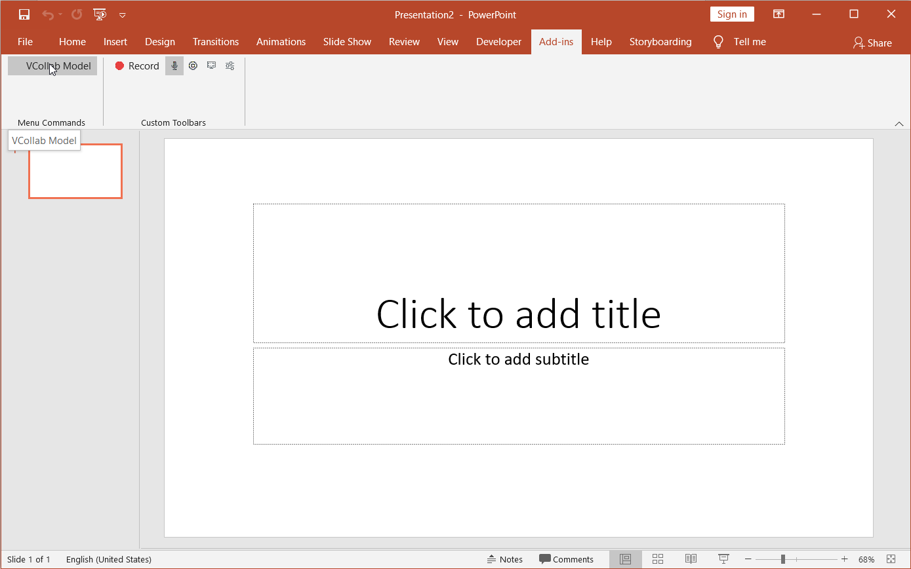

Embedding Presenter in Microsoft Powerpoint 2007
VCollab Presenter can be embedded into PowerPoint 2007 in two ways
- Using the Add-Ins tab
- Using the Developer tab.
Steps to embed Presenter using the Add-Ins tab
Open Microsoft Powerpoint 2007
Go to Add-Ins tab and click VCollab Model (This is available only if VCollab suite is installed)
If there is no Add-Ins tab, click here to know how to enable it.

- Select the CAX file to load from the file open dialog box that opens up.

- VCollab Control is thus embedded as below.

Steps to embed Presenter using Developer tab
- Open Microsoft Powerpoint 2007
- Go to the Developer tab and Click Control Toolbox as highlighted below. If there is no Developer tab, click here to know how to enable it.

- Browse and select VCollab Control from the More Controls list as shown below.

- Click Ok and observe that the VCollab presenter is embedded as shown below.

Loading CAX file in Powerpoint 2007 WIth Embedded VCollab Presenter
- Right click and select VCollab Control Object | Edit in the drop down menu items as below.

- A model loaded in VCollab Presenter embedded in Microsoft PowerPoint 2007 is shown below.